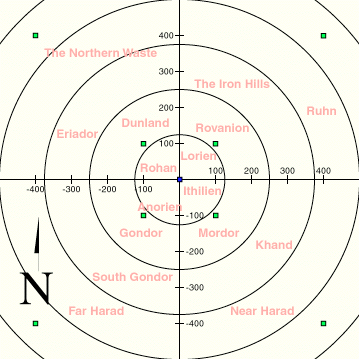

The realm is a massive cartesian system and all objects reside at some point on this plane. Certain regions of the playing grid have different names. In general, this is only to give the player some idea of his/her present location. Some special places do exist.

Circles
- The realm is broken up in circles, each one with an increasing radius of 125
from the origin. For example, if you're standing on (0, 200), you are said to be
in circle 2. This distinction is made because a monster's size is equal to the
circle it was encountered in.
Trading Posts
- These are located at certain coordinates. In order to find a post, take
any number and multiply it to itself, then multiply it by 100. A post will
be at that coordinate number. For example: 1*1*100 = 100, so a post is at
(+/- 100, +/- 100). 2*2*100 = 400, so another post is at (+/- 400, +/- 400).
Then there are posts at 900, 1600, 2500 ... Trading
posts sell equipment for large quantities of
gems and
gold. Farther out posts have more things for
sale. Be careful about cheating the merchants, as they have short
tempers. Merchants are dishonest about 2% of the time.
Lord's Chamber
- This is located at the origin (0,0). Players with staves and crowns may enter, possibly after a bloody coup.
Point of No Return
- This is a large square around the origin. Any time one of your coordinates is equal or greater than 1,000,000, you are beyond this point of no return. The only way to return is via Gwaihir.
Dead Marshes
- This is a band located fairly distant from the origin. The first sixteen monsters (water monsters) can normally only be found here and movement slows to a crawl. Teleportation spells do not work for locations inside the Marshes.
Plateau of Gorgoroth
- This is surrounded by the Dead Marshes and cannot be reached by teleport. The monsters here are extremely tough and improve as the player improves. Players are warned not to spend too much time in here unless they enjoy a significant risk of death! However, the post in the Plateau is the only post in the game that sells blessings....
Cracks of Doom
- This is surrounded by the Plateau of Gorgoroth and cannot be reached by teleport. The monsters here are even tougher than on the Plateau and improve as the player improves. Players are warned not to spend too much time in here unless they enjoy a significant risk of death! However, the Cracks are the only place in the Realm where Rings of Power can be destroyed, a feat necessary to receive a crown.
The Edge of the World
- It is rumored to be out there somewhere, but no one is known to have returned after seeing it.